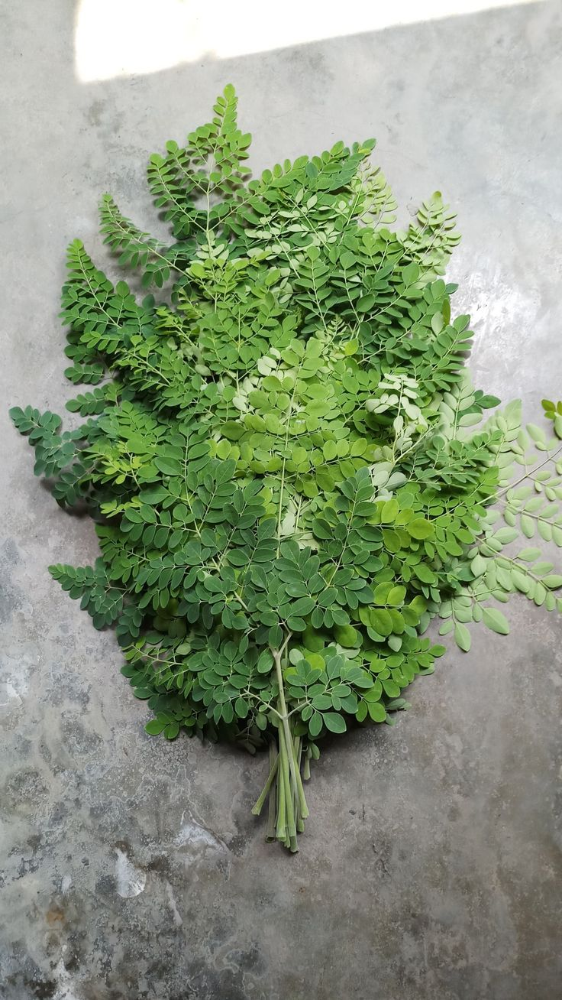

La brède moringa est un légume-feuille provenant de l’arbre Moringa oleifera, cultivé dans les régions tropicales, y compris à Mayotte. Ses feuilles sont petites, vertes et délicates, avec des bords légèrement dentelés. Elles poussent en petites grappes sur les branches de l’arbre et ont une texture tendre qui les rend faciles à cuisiner. La brède moringa peut être consommée fraîche, cuite à l’eau, sautée, ou séchée en poudre pour agrémenter sauces et plats. Elle est appréciée pour sa couleur verte intense et son goût légèrement amer mais agréable, proche des épinards ou des légumes-feuilles tropicaux.

BRED MANIOC 1,35€kl
Mayotte, la brède manioc désigne les jeunes feuilles comestibles du manioc (Manihot esculenta), cultivé dans les jardins et exploitations locales. Les feuilles sont vertes et tendres lorsqu’elles sont récoltées, et elles poussent en groupes le long des tiges de la plante. La brède manioc est un légume traditionnel très utilisé dans la cuisine mahoraise : elle est souvent bouillie, sautée ou mijotée en sauce, accompagnée de riz, de manioc ou de fruit à pain. Sa saveur est douce avec une légère amertume, et elle est appréciée pour sa valeur nutritive, riche en vitamines et minéraux. La brède manioc à Mayotte fait partie des produits locaux essentiels qui complètent l’alimentation quotidienne.
BRED FEUILLE DE PATATE DOUCE 1,50€kl
À Mayotte, les feuilles de patate douce sont parfaitement comestibles et peuvent être utilisées comme un légume-feuille. Très nutritives, elles apportent vitamines et minéraux, et se cuisinent facilement, souvent comme des « brèdes ». On peut les préparer sautées, en bouillon ou au lait de coco, selon les habitudes locales. La plante pousse très bien sur l’île grâce au climat chaud, et il est préférable de récolter les jeunes feuilles, plus tendres et agréables à manger.
BRED MAFANE 2,35€kl
Les brèdes mafane sont également très consommées à Mayotte et dans tout l’archipel des Comores. Elles proviennent d’une plante appelée brède mafane ou cresson de Para, connue pour son goût légèrement piquant et sa sensation d’engourdissement en bouche. Très nutritives, elles sont riches en vitamines et minéraux, et s’utilisent comme légume-feuille dans de nombreux plats traditionnels. À Mayotte, on les prépare souvent en sauté, en bouillon ou dans des plats au lait de coco. La plante pousse très bien sous le climat chaud et humide de l’île, et on récolte surtout les jeunes feuilles et les petits boutons floraux, qui apportent la saveur caractéristique.


, edible leaves for creole cuisine in a jar on a white background _ Premium Photo.jpg)